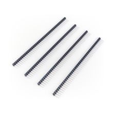

Линейка штыревая 40 pin 2.54 мм PLS-40 (4 шт.)
РазъёмыЭто однорядная штыревая линейка (pin header) на 40 контактов с шагом 2.54 мм, предназначенная для пайки в плату и подключения модулей/плат с ответной «мамой».
Такие штыревые линейки используют как универсальный разъём для вывода сигналов и питания на печатных платах. Формат 1x40 с шагом 2.54 мм совместим с большинством плат, макетных и переходных решений, а также с ответными разъёмами стандартного 0.1"-шагового семейства. Обычно применяется в отладочных платах, самодельных устройствах и в качестве межплатного соединителя. Для позиции «PLS-40» канонически подходит однорядный прямой штыревой разъём 1x40 семейства PLS/2.54 мм, а по найденным техническим страницам у Connfly это серия 2.54mm Pin Header V/T Type с вариантом на 1*1~1*40 контактов.